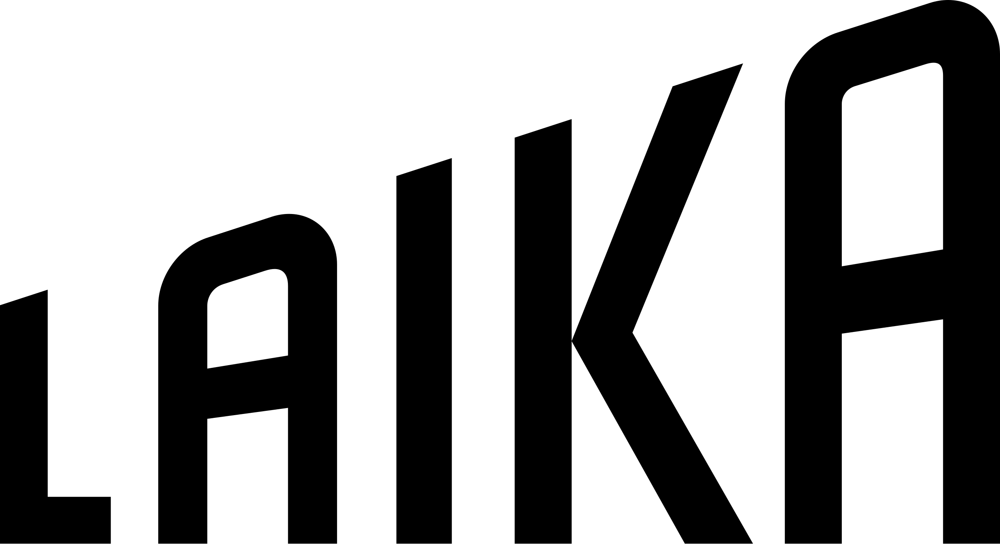
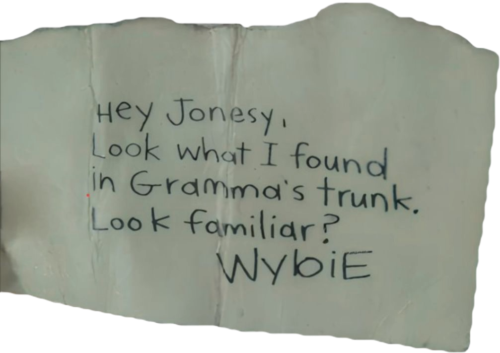
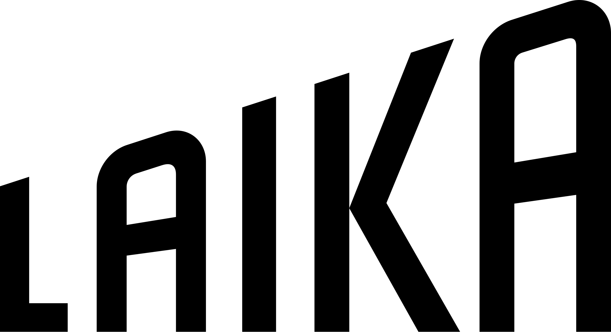
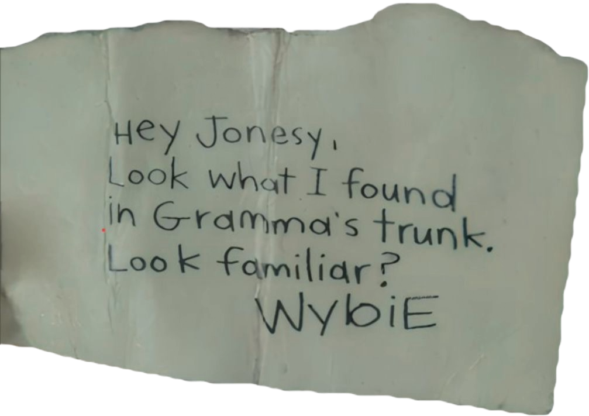

Mundo Secreto

.png)


Coraline e o Mundo Secreto é um filme de fantasia sombria e stop-motion baseado no livro de Neil Gaiman. Ele se tornou famoso por sua estética única, atmosfera misteriosa e animação extremamente detalhada, marcando gerações por seu tom sombrio e criativo, além de temas como coragem, identidade e família.


A Laika Studios é um estúdio americano especializado em animação stop-motion, fundado em 2005 em Oregon. Famosa por misturar técnicas tradicionais com tecnologia moderna, a Laika ganhou destaque mundial com seu primeiro longa-metragem, “Coraline e o Mundo Secreto” (2009) — a primeira grande obra do estúdio.
 



Sinopse
“Coraline descobre uma porta para um mundo alternativo onde tudo parece perfeito, pais afetuosos e desejos realizados. Porém todos têm botões nos olhos, e logo percebe que essa realidade paralela esconde intenções sombrias para mantê-la presa.”


Sobre Mim
Eu me chamo Letícia, tenho 19 anos e estou cursando Ciência da Computação na SPtech. Sou apaixonada por filmes de terror, casos criminais e tudo que envolve o sobrenatural. Desde criança me encanta a fantasia e o tom sombrio que Coraline e o Mundo Secreto tem, por isso resolvi fazer um site sobre esse filme.